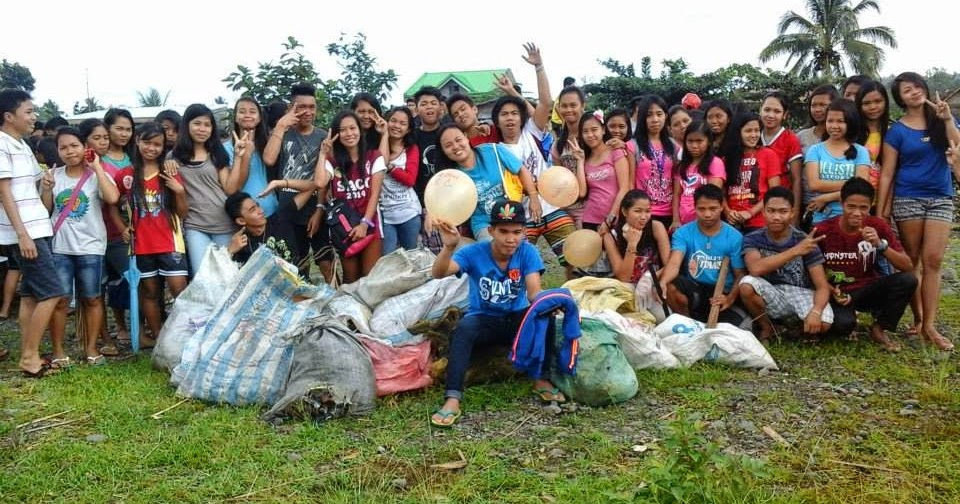
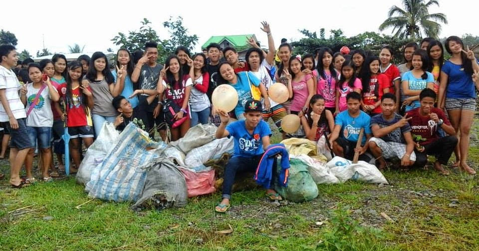

Youth Wave of Change is a passionate community of young Filipinos taking action to protect our oceans from plastic pollution. We believe in the power of young people to lead real change through action, education, and community involvement. Our mission is to raise awareness about ocean pollution, organize coastal cleanups, and inspire a generation to take responsibility for the planet’s future with one piece of trash at a time.
Our story began in May 2024, when a group of college friends set out for a beach vacation, hoping to go to a place that they had not visited in a while. But when they arrived, their once memorable rendezvous was unrecognizable. The shoreline was littered with trash, plastic, and other waste. What was meant to be a relaxing break quickly turned into a moment of realization. Moved by the shocking state of the beach, they decided to take action. That experience became the foundation for this youth ocean cleanup organization.
 
I am the youth leader of Youth Wave of Change, a group I joined to help protect our oceans from trash and pollution. I care deeply about the ocean and want to make sure it stays clean and healthy for both people and marine life. Growing up near the coast, I have seen how plastic waste and other litter harm our beaches and the creatures that live in the sea, and this inspired me to take action. Through beach cleanups, projects, and awareness campaigns, I work to inspire other young people to take part in protecting our environment. I also believe in the power of education and by sharing knowledge and encouraging others to make simple changes in their daily lives, like reducing plastic use, we can prevent more waste from reaching the ocean. My goal is to build a community of youth leaders who are passionate about creating positive change. I believe that even small steps, when done together, can create a big wave of change for a cleaner and healthier future.
If you want to learn more about the current happenings, acts, and other cleanup organizations, here are the URL links:
Located: